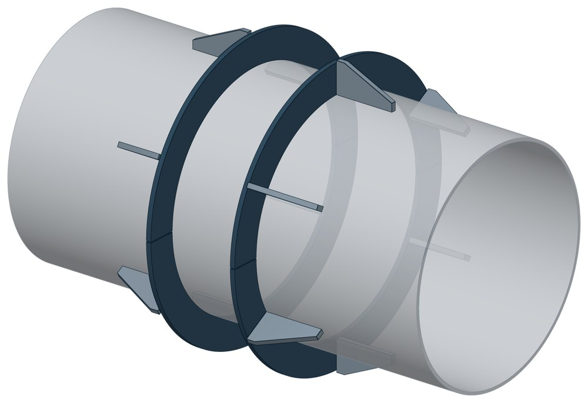
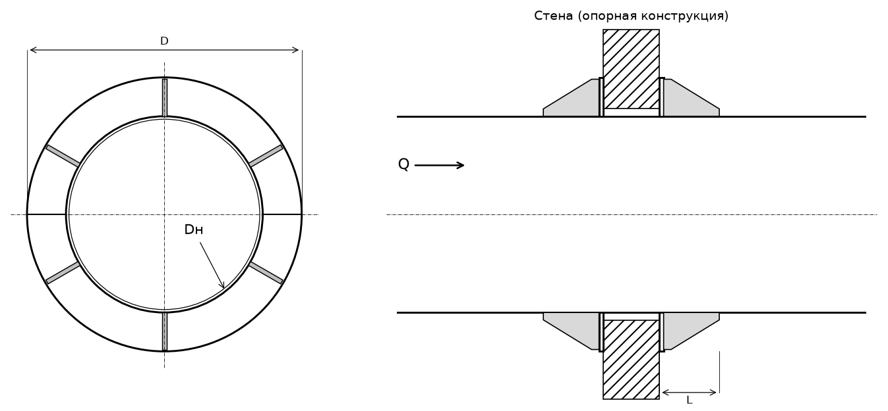

Опора неподвижная щитовая ТС-666
Опора для места, где труба проходит сквозь стенку канала или камеры: кольцевые щиты с рёбрами приварены к трубе и упираются в стенку с двух сторон.

- Диаметр трубы Dн
- 108–1420 мм
- Документ
- Серия 5.903-13 вып. 7-95
- Исполнений
- 24
- Осевая Q
- до 3300 кН
- Масса
- 8,4–411 кг
- Сталь
- Листовые детали — Ст3сп5 ГОСТ 14637-89. Для холодного климата — низколегированная сталь, в том числе 09Г2С; размеры опоры при этом не меняются.
- Покрытие
- По альбому серии — окраска по грунту, кроме поверхностей под сварку. Вид покрытия согласуется при заказе.
- 3D-модели
- у всех исполнений
Применение и монтаж
Назначение: где применяется
Трубопроводы Dн 108–1420 мм, осевая сила от 50 до 3300 кН. Опорная конструкция — железобетонная стенка или щит с проёмом под трубу.
Монтаж: как устанавливается
Щиты приваривают к трубе. К стенке они прилегают свободно, без приварки: так и опора, и стенка разгружены от крутящих моментов.
Отличия от соседних типов
Осевая сила выше — щитовая усиленная ТС-667 с дополнительным кольцом. Нужно удержать трубу от смещения вбок — добавьте боковую ТС-668.
Габаритная схема ТС-666

Состав комплекта на одну опору
| Щит (полукольцо с рёбрами) | 4 шт. |
Таблица исполнений ТС-666
| Обозначение | Код ПРОМБУРГ | Dнмм | Стенка Sмм | QкН | Габарит Dмм | Длина упора Lмм | Массакг | 3D |
|---|---|---|---|---|---|---|---|---|
| ТС-666.00.00 | ПБ-666-0108-1 | 108 | 4 | 50 | 225 | 110 | 8,4 | 3D |
| ТС-666.00.00-01 | ПБ-666-0133-1 | 133 | 4 | 70 | 245 | 110 | 8,8 | 3D |
| ТС-666.00.00-02 | ПБ-666-0159-1 | 159 | 5 | 100 | 282 | 110 | 10,4 | 3D |
| ТС-666.00.00-03 | ПБ-666-0219-1 | 219 | 7 | 200 | 365 | 110 | 16,4 | 3D |
| ТС-666.00.00-04 | ПБ-666-0273-1 | 273 | 8 | 240 | 420 | 110 | 18,4 | 3D |
| ТС-666.00.00-05 | ПБ-666-0325-1 | 325 | 8 | 300 | 480 | 110 | 23,8 | 3D |
| ТС-666.00.00-06 | ПБ-666-0377-1 | 377 | 9 | 380 | 540 | 110 | 27,8 | 3D |
| ТС-666.00.00-07 | ПБ-666-0426-1 | 426 | 7 / 10 | 320 / 550 | 610 | 132 | 45,6 | 3D |
| ТС-666.00.00-08 | ПБ-666-0530-1 | 530 | 7 | 400 | 670 | 152 | 33,3 | 3D |
| ТС-666.00.00-09 | ПБ-666-0530-2 | 530 | 9 | 550 | 740 | 162 | 50,4 | 3D |
| ТС-666.00.00-10* | ПБ-666-0630-1 | 630 | 8 | 500 | 760 | 152 | 37,4 | 3D |
| ТС-666.00.00-11 | ПБ-666-0630-2 | 630 | 10 | 850 | 870 | 152 | 70,8 | 3D |
| ТС-666.00.00-12* | ПБ-666-0720-1 | 720 | 9 | 700 | 880 | 152 | 48,8 | 3D |
| ТС-666.00.00-13 | ПБ-666-0720-2 | 720 | 11 | 950 | 975 | 152 | 81,6 | 3D |
| ТС-666.00.00-14* | ПБ-666-0820-1 | 820 | 9 | 1300 | 1000 | 196 | 87,6 | 3D |
| ТС-666.00.00-15 | ПБ-666-0820-2 | 820 | 11 | 1650 | 1110 | 196 | 140,3 | 3D |
| ТС-666.00.00-16* | ПБ-666-0920-1 | 920 | 10 | 2200 | 1120 | 226 | 110 | 3D |
| ТС-666.00.00-17 | ПБ-666-0920-2 | 920 | 10 | 2200 | 1220 | 226 | 169 | 3D |
| ТС-666.00.00-18* | ПБ-666-1020-1 | 1020 | 10 | 2400 | 1230 | 266 | 122,6 | 3D |
| ТС-666.00.00-19 | ПБ-666-1020-2 | 1020 | 14 | 2400 | 1330 | 266 | 197,4 | 3D |
| ТС-666.00.00-20* | ПБ-666-1220-1 | 1220 | 11 | 3100 | 1440 | 286 | 149 | 3D |
| ТС-666.00.00-21 | ПБ-666-1220-2 | 1220 | 14 | 3100 | 1570 | 286 | 239,2 | 3D |
| ТС-666.00.00-22* | ПБ-666-1420-1 | 1420 | 14 | 3300 | 1640 | 300 | 190 | 3D |
| ТС-666.00.00-23 | ПБ-666-1420-2 | 1420 | 14 | 3300 | 1820 | 300 | 411 | 3D |
* Примечания к исполнениям:
- ТС-666.00.00-10 — D: 780 → 760, опечатка альбома: записан D тяжёлого исполнения; D = 2R щита ТС-666.01.00
- ТС-666.00.00-12 — D: 975 → 880, опечатка альбома: записан D тяжёлого исполнения; D = 2R щита ТС-666.01.00
- ТС-666.00.00-14 — D: 1110 → 1000, опечатка альбома: записан D тяжёлого исполнения; D = 2R щита ТС-666.01.00
- ТС-666.00.00-16 — D: 1220 → 1120, опечатка альбома: записан D тяжёлого исполнения; D = 2R щита ТС-666.01.00
- ТС-666.00.00-18 — D: 1330 → 1230, опечатка альбома: записан D тяжёлого исполнения; D = 2R щита ТС-666.01.00
- ТС-666.00.00-20 — D: 1570 → 1440, опечатка альбома: записан D тяжёлого исполнения; D = 2R щита ТС-666.01.00
- ТС-666.00.00-22 — D: 1820 → 1640, опечатка альбома: записан D тяжёлого исполнения; D = 2R щита ТС-666.01.00
Два значения через дробь — исполнение рассчитано на две толщины стенки трубы.
Чтобы заказать, сообщите обозначение и код ПРОМБУРГ: +7 (499) 325-51-35, promburg@yandex.ru.
Нормативные документы
- Серия 5.903-13 вып. 7-95 Опоры трубопроводов неподвижные. Рабочие чертежи (PDF, 127 с.) — документ, по которому изготавливается изделие
- ГОСТ 14637-89 Прокат толстолистовой из углеродистой стали обыкновенного качества — редакция, на которую ссылается альбом серии; действующую редакцию уточняйте
Связанные позиции
- Усиленное исполнение: ТС-667 — неподвижная щитовая усиленная
- Соседний тип: ТС-668 — неподвижная боковая
- Парная подвижная опора: ТС-623 — скользящая приварная (общий диапазон Dн 108–159)
- Парная подвижная опора: ТС-624 — скользящая приварная (общий диапазон Dн 194–1420)
Собрать узел с этим изделием
- Конструктор узла: собрать участок с компенсатором под свои данные труба, длина, среда, условия — состав узла и спецификация бесплатно
На трубу Dн 108–1420 мм в каталоге
Позиции каталога с исполнениями на те же наружные диаметры трубы.
Детали трубопровода
- Фланец стальной плоский приварной общих Dн: 16
- Фланец стальной воротниковый общих Dн: 15
- Отвод стальной крутоизогнутый 90° общих Dн: 14
- Отвод стальной крутоизогнутый 90°, 09Г2С общих Dн: 12
- Заглушка стальная эллиптическая общих Dн: 10
- Днище стальное эллиптическое общих Dн: 9
- Переход стальной концентрический общих Dн: 9
- Отвод нержавеющий 90° общих Dн: 1
Компенсаторы
- Компенсатор сильфонный стартовый СК общих Dн: 16
- Компенсатор сильфонный 2ОПКР общих Dн: 15
- Компенсатор сильфонный 2ОПКР (ИЯНШ) 2ОПКРИ общих Dн: 15
- Компенсатор сильфонный 2СКУ.М 2СКУМ общих Dн: 15
- Компенсатор сильфонный 2СКУ.М (ИЯНШ) 2СКУМИ общих Dн: 15
- Компенсатор сильфонный 2СКУ.ППМ (ИЯНШ) 2СКУППМИ общих Dн: 15
- Компенсатор сильфонный КС общих Dн: 15
- Компенсатор сильфонный КСО общих Dн: 15
- Компенсатор сильфонный КСО (ИЯНШ) КСОИ общих Dн: 15
- Компенсатор сильфонный КСОФ общих Dн: 15
- Компенсатор сильфонный ОПКР общих Dн: 15
- Компенсатор сильфонный ОПКР (ИЯНШ) ОПКРИ общих Dн: 15
- Компенсатор сильфонный сейсмический общих Dн: 15
- Компенсатор сильфонный СКУ.М СКУМ общих Dн: 15
И ещё 20 типов — в оглавлении каталога.
Другие опоры и подвески
- Опора неподвижная двухупорная ТС-660 общих Dн: 16
- Опора скользящая хомутовая ТС-626 общих Dн: 16
- Опорные плиты диэлектрические ТС-632 общих Dн: 16
- Опоры приварные неподвижные скользящие ОПН общих Dн: 16
- Опоры сварные скользящие неподвижные и направляющие СТО 79814898-130 общих Dн: 16
- Опора приварная скользящая и неподвижная ОСТ 34-10-616-93 общих Dн: 16
- Опоры хомутовые скользящие ОСТ 34-10-617-93 общих Dн: 16
- Опоры хомутовые неподвижные ОСТ 34-10-618-93 общих Dн: 16
- Опоры скользящие неподвижные ОСТ 34-10-623-93 общих Dн: 16
- Блок подвески с опорной балкой ОСТ 34-10-726-93 общих Dн: 16
И ещё 96 типов — в оглавлении каталога.
Другие типы раздела
Неподвижные опоры тепловых сетей (ТС-659…ТС-671)
- Опора неподвижная хомутовая ТС-659
- Опора неподвижная двухупорная ТС-660
- Опора неподвижная четырёхупорная ТС-661
- Опора неподвижная двухупорная усиленная ТС-663
- Опора неподвижная четырёхупорная усиленная ТС-664
- Опора неподвижная двухупорная сальниковых компенсаторов ТС-665
- Опора неподвижная щитовая усиленная ТС-667
- Опора неподвижная боковая ТС-668
- Опора неподвижная хомутовая бескорпусная ТС-669
- Опора неподвижная хомутовая с корпусом ТС-670
- Опора неподвижная бугельная с корпусом ТС-671
- Опора неподвижная двухупорная ТС-760
Частые вопросы
Чем неподвижная опора отличается от подвижной?
Неподвижная закрепляет трубу в одной точке и принимает усилия от температурного расширения, давления и трения. Подвижная держит вес трубы и даёт ей перемещаться при нагреве. Неподвижные делят трассу на участки компенсации, подвижные стоят между ними. Место и тип каждой опоры задаёт проект.
Какую неподвижную опору выбрать: хомутовую, упорную, щитовую?
Выбор идёт по расчётной осевой силе и по тому, на что опора опирается. Малый диаметр и небольшая сила — хомутовая ТС-659. Нужна высота под изоляцию — хомутовая с корпусом ТС-670 или бугельная ТС-671. Труба проходит сквозь стенку — щитовая ТС-666, при большой силе усиленная ТС-667. Упор в балку или траверсу — двух- и четырёхупорные ТС-660, ТС-661, при больших нагрузках усиленные ТС-663, ТС-664.
Зачем нужна толщина стенки трубы?
Для Dн от 426 мм в одной позиции серии есть исполнения под разные стенки: геометрия близкая, но допускаемая нагрузка другая — её ограничивают местные напряжения в стенке трубы. Без толщины стенки исполнение однозначно не определить. Пример — щитовая ТС-666 на Dн 530: 400 кН при стенке 7 мм и 550 кН при 9 мм.
Какую нагрузку выдерживает опора?
Допускаемая нагрузка задана в таблице для каждого исполнения — она в первой группе колонок каждой карточки. Хомутовая ТС-659 — осевая Q от 5 до 25 кН, щитовая ТС-666 — от 50 до 3300 кН, хомутовая с корпусом ТС-670 — Q до 380 кН и боковая T до 200 кН.
Кто считает нагрузку на неподвижную опору?
Нагрузку определяет проектировщик расчётом трубопровода на прочность и компенсацию: она зависит от схемы трассы, а не только от диаметра. По заданным Dн, стенке и нагрузкам Q, P, T подбирается исполнение из таблицы.
Неподвижную опору приваривают к строительной конструкции?
Упоры и щиты приваривают к трубе, а к несущей конструкции они прилегают свободно, без приварки — так разгружаются от крутящих моментов и опора, и конструкция. У хомутовой ТС-659 упоры приваривают к трубе, а хомут — к балке.